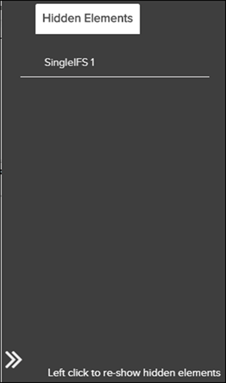

Pinpoint supporte le rendu du graphique X3D dans la fenêtre
Graphique. Vous pouvez également consulter et effectuer des
manipulations plus avancées sur X3D à travers une page d'accueil X3D. Pour plus
d'information, merci de se référ à Affichage du graphique X3D dans la page d'accueil X3D.
Remarque : Avant de pouvoir afficher le graphique X3D dans une page d'accueil X3D,
vous devez d'abord configurer la page d'accueil. Pour plus d'information, merci
de se référer à Flatirons Pinpoint Configuration Guide.
Les étapes ci-dessous décrivent la procédure d'ouverture et d'utilisation du clavier et de la souris pour faire pivoter, déplacer et agrandir le graphique X3D. Vous pouvez également utiliser les options en haut de fenêtre Graphique pour manipuler le graphique. De plus, vous pouvez cliquer sur le bouton droit de l'image pour effectuer une recherche en texte intégral, se concentrer sur un élément spécifique (masquant les autres éléments), ou masquer un élément.
-
Ces options situées en haut de fenêtre Graphique peuvent
être utilisée pour manipuler le graphique:
Tableau 1. Les options de la fenêtre graphique Option Description Explose l'élement dans l'image.  Eléments
cachés
Eléments
cachésCliquez sur cette icône pour afficher l'onglet des éléments cachés. Pour fermer l'onglet, cliquez à nouveau sur l'icône. Précédent / Suivant Graphique Utilisez ces boutons pour passer à l'image suivante ou précédente.  Minimiser le
graphique
Minimiser le
graphiqueCliquez sur cette icône pour réduire la fenêtre Graphiqe et donner de la place à la fenêtre Contenu.  Maximiser le
graphique
Maximiser le
graphiqueCliquez sur cette icône pour passer de 50/50 Contenu/Graphique à afficher uniquement la fenêtre Graphique. -
Sélectionnez l'une de ces options dans le menu contextuel:
- Rechercher: Recherche le texte configuré dans le fichier X3D Config.json.
-
Mise au point: Affiche l'image focalisée l'élément et cacher les autres éléments.
-
Masquer: Masque l'élément.
Lorsque vous sélectionnez l'option de focus ou de masquage, tous les éléments masqués sont répertoriés dans le volet Eléments masqués.Utilisez l'icône
La fenêtre du Hidden Elements
pour afficher / masquer la
fenêtre.